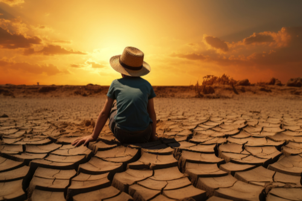
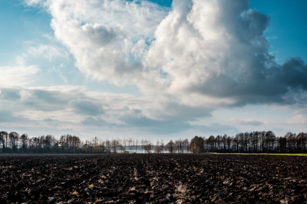
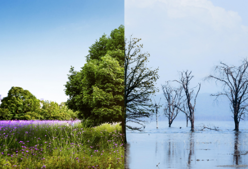
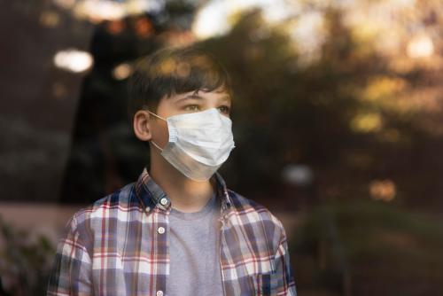
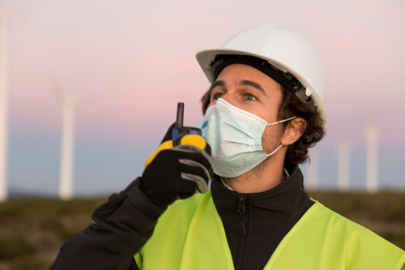
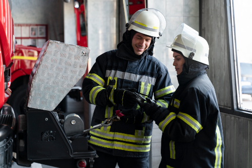
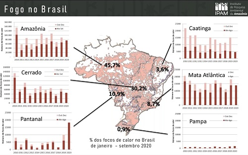
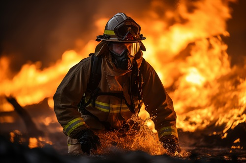

Seca prolongada:
Períodos de estiagem intensificam a secagem da vegetação, tornando-a mais suscetível à ignição.

Agricultores utilizam o fogo para limpar áreas para o plantio ou para renovar pastagens, muitas vezes de forma inadequada
Consequências das Queimadas:

Perda da biodiversidade, erosão do solo, assoreamento de rios e poluição do ar.

A fumaça das queimadas pode causar problemas respiratórios e alergias.
Prevenção e Combate:

Aumento da fiscalização em áreas de risco, especialmente durante períodos de seca.

Investimento em equipamentos modernos para combate a incêndios e treinamento de brigadistas.

Levantamento indica que o número de incêndios ocorridos nos primeiros nove meses de 2020 já superaram os registrados em todo o ano de 2019 em três biomas: Amazônia, Pampa e Pantanal, com a maior alta. Até setembro, somente Cerrado e Caatinga tiveram menos incêndios no comparativo com o ano passado, e a Mata Atlântica se manteve praticamente igual. Os números em preto no centro do gráfico mostram quantos % dos focos de calor no Brasil ocorreram em cada bioma neste ano.

Caso encontre focos de incêndio e queimadas, chamar as autoridades competentes, como o Corpo de Bombeiros pelo telefone 193 e a Polícia Militar pelo telefone 190

Queimadas agrícolas:

Degradação ambiental:

Problemas de saúde:

Fiscalização:

Equipamentos e treinamento:

Grafico IPAM

Informações de Contato: